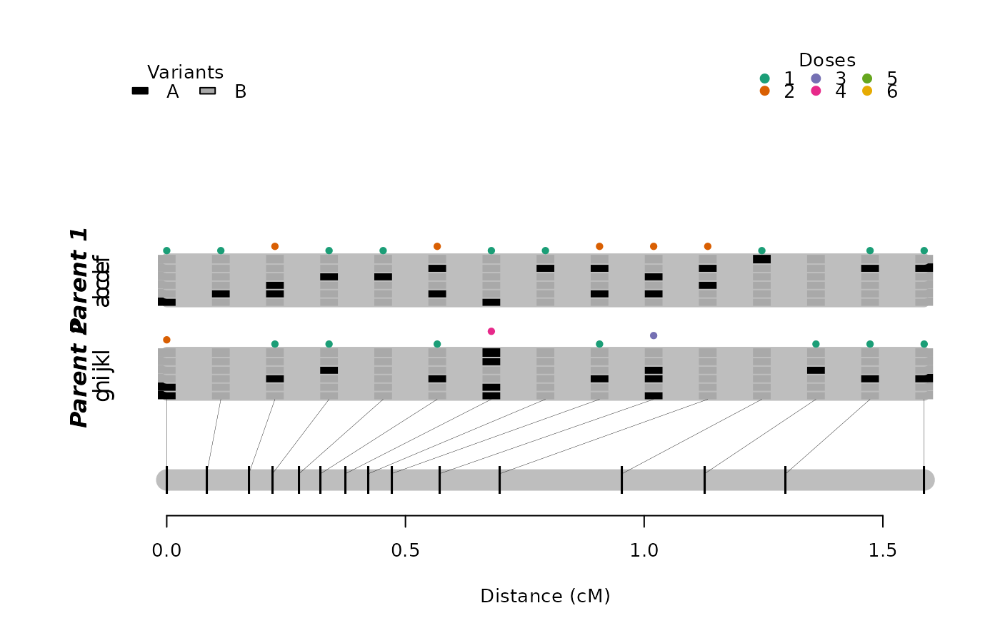
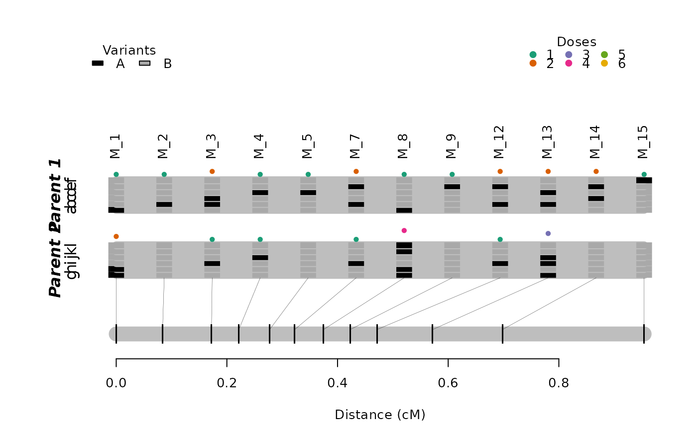
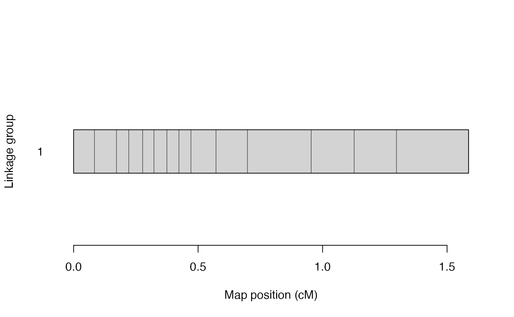

R/est_map_hmm.R
est_rf_hmm_sequential.RdPerforms the multipoint analysis proposed by Mollinari and Garcia (2019) in a sequence of markers removing unlikely phases using sequential multipoint information.
est_rf_hmm_sequential(
input.seq,
twopt,
start.set = 4,
thres.twopt = 5,
thres.hmm = 50,
extend.tail = NULL,
phase.number.limit = 20,
sub.map.size.diff.limit = Inf,
info.tail = TRUE,
reestimate.single.ph.configuration = FALSE,
tol = 0.1,
tol.final = 0.001,
verbose = TRUE,
detailed.verbose = FALSE,
high.prec = FALSE
)an object of class mappoly.sequence
an object of class mappoly.twopt
containing the two-point information
number of markers to start the phasing procedure (default = 4)
the LOD threshold used to determine if the linkage phases compared via two-point analysis should be considered for the search space reduction (A.K.A. \(\eta\) in Mollinari and Garcia (2019), default = 5)
the LOD threshold used to determine if the linkage phases compared via hmm analysis should be evaluated in the next round of marker inclusion (default = 50)
the length of the chain's tail that should
be used to calculate the likelihood of the map. If NULL (default),
the function uses all markers positioned. Even if info.tail = TRUE,
it uses at least extend.tail as the tail length
the maximum number of linkage phases of the sub-maps defined
by arguments info.tail and extend.tail. Default is 20. If the
size exceeds this limit, the marker will not be inserted. If
Inf, then it will insert all markers.
the maximum accepted length
difference between the current and the previous sub-map defined
by arguments info.tail and extend.tail. If the
size exceeds this limit, the marker will not be inserted. If
NULL(default), then it will insert all markers.
if TRUE (default), it uses the complete informative tail
of the chain (i.e. number of markers where all homologous
(\(ploidy x 2\)) can be distinguished) to calculate the map likelihood
logical. If FALSE (default)
returns a map without re-estimating the map parameters in cases
where there are only one possible linkage phase configuration
the desired accuracy during the sequential phase (default = 10e-02)
the desired accuracy for the final map (default = 10e-04)
If TRUE (default), current progress is shown; if
FALSE, no output is produced
If TRUE, the expansion of the current
submap is shown;
logical. If TRUE uses high precision
(long double) numbers in the HMM procedure implemented in C++,
which can take a long time to perform (default = FALSE)
A list of class mappoly.map with two elements:
i) info: a list containing information about the map, regardless of the linkage phase configuration:
the ploidy level
number of markers
a vector containing the (ordered) indices of markers in the map, according to the input file
the names of markers in the map
a vector containing the dosage in parent 1 for all markers in the map
a vector containing the dosage in parent 2 for all markers in the map
a vector indicating the sequence (usually chromosome) each marker belongs
as informed in the input file. If not available,
chrom = NULL
physical position (usually in megabase) of the markers into the sequence
reference base used for each marker (i.e. A, T, C, G). If not available,
seq.ref = NULL
alternative base used for each marker (i.e. A, T, C, G). If not available,
seq.ref = NULL
a vector containing p-values of the chi-squared test of Mendelian segregation for all markers in the map
name of the dataset of class mappoly.data
the LOD threshold used to define the linkage phase configurations to test
ii) a list of maps with possible linkage phase configuration. Each map in the list is also a list containing
a vector containing the (ordered) indices of markers in the map, according to the input file
a vector of size (n.mrk - 1) containing a sequence of recombination
fraction between the adjacent markers in the map
linkage phase configuration for all markers in both parents
the hmm-based multipoint likelihood
This function sequentially includes markers into a map given an
ordered sequence. It uses two-point information to eliminate
unlikely linkage phase configurations given thres.twopt. The
search is made within a window of size extend.tail. For the
remaining configurations, the HMM-based likelihood is computed and
the ones that pass the HMM threshold (thres.hmm) are eliminated.
Mollinari, M., and Garcia, A. A. F. (2019) Linkage analysis and haplotype phasing in experimental autopolyploid populations with high ploidy level using hidden Markov models, _G3: Genes, Genomes, Genetics_. doi:10.1534/g3.119.400378
# \donttest{
mrk.subset <- make_seq_mappoly(hexafake, 1:20)
red.mrk <- elim_redundant(mrk.subset)
unique.mrks <- make_seq_mappoly(red.mrk)
subset.pairs <- est_pairwise_rf(input.seq = unique.mrks,
ncpus = 1,
verbose = TRUE)
#> INFO: Going singlemode. Using one CPU for calculation.
subset.map <- est_rf_hmm_sequential(input.seq = unique.mrks,
thres.twopt = 5,
thres.hmm = 10,
extend.tail = 10,
tol = 0.1,
tol.final = 10e-3,
phase.number.limit = 5,
twopt = subset.pairs,
verbose = TRUE)
#> Number of markers: 17
#> ════════════════════════════════════════════════════════════ Initial sequence ══
#> 4 markers...
#> • Trying sequence: 1 2 3 4 :
#> 6 phase(s): . . . . . .
#> ══════════════════════════════════════════════════ Done with initial sequence ══
#> 5 /5 :(29.4%) 5 : 1 ph (1/1) -- tail: 4 |||•|| ||||||
#> 6 /6 :(35.3%) 7 : 4 ph (1/4) -- tail: 5 |••||| ||•||| ... |••||| ||||•|
#> 7 /7 :(41.2%) 8 : 1 ph (1/1) -- tail: 6 •||||| ••||••
#> 8 /8 :(47.1%) 9 : 2 ph (1/2) -- tail: 7 |•|||| |||||| ||||•| ||||||
#> 9: not included (*linkage phases*)
#> 9 /10:(58.8%) 12: 1 ph (1/1) -- tail: 8 |•||•| ||•|||
#> 10/11:(64.7%) 13: 2 ph (1/2) -- tail: 9 |•|•|| •|••|| |•|•|| ||•••|
#> 11/12:(70.6%) 14: 1 ph (1/1) -- tail: 10 ||•|•| ||||||
#> 12/13:(76.5%) 15: 4 ph (1/4) -- tail: 11 •||||| |||||| ... |•|||| ||||||
#> 13/14:(82.4%) 16: 1 ph (1/1) -- tail: 12 |||||| |||•||
#> 14/15:(88.2%) 17: 1 ph (1/1) -- tail: 13 ||||•| ||•|||
#> 16: not included (*linkage phases*)
#> 15/17:(100%) 20: 1 ph (1/1) -- tail: 14 ||||•| ||•|||
#> ══════════════════════════════════ Reestimating final recombination fractions ══
#> Markers in the initial sequence: 17
#> Mapped markers : 15 (88.2%)
#> ════════════════════════════════════════════════════════════════════════════════
print(subset.map, detailed = TRUE)
#> This is an object of class 'mappoly.map'
#> Ploidy level: 6
#> No. individuals: 300
#> No. markers: 15
#> No. linkage phases: 1
#>
#> ---------------------------------------------
#> Linkage phase configuration: 1
#> log-likelihood: -781.3506
#> LOD: 0
#>
#> a b c d e f g h i j k l
#> M_1 o | | | | | o o | | | | 0.0
#> M_2 | o | | | | | | | | | | 0.1
#> M_3 | o o | | | | | o | | | 0.2
#> M_4 | | | o | | | | | o | | 0.2
#> M_5 | | | o | | | | | | | | 0.3
#> M_7 | o | | o | | | o | | | 0.3
#> M_8 o | | | | | o o | | o o 0.4
#> M_9 | | | | o | | | | | | | 0.4
#> M_12 | o | | o | | | o | | | 0.5
#> M_13 | o | o | | o | o o | | 0.6
#> M_14 | | o | o | | | | | | | 0.7
#> M_15 | | | | | o | | | | | | 1.0
#> M_16 | | | | | | | | | o | | 1.1
#> M_17 | | | | o | | | o | | | 1.3
#> M_20 | | | | o | | | o | | | 1.6
#>
plot(subset.map)

plot(subset.map, left.lim = 0, right.lim = 1, mrk.names = TRUE)

plot(subset.map, phase = FALSE)

## Retrieving simulated linkage phase
ph.P <- maps.hexafake[[1]]$maps[[1]]$seq.ph$P
ph.Q <- maps.hexafake[[1]]$maps[[1]]$seq.ph$Q
## Estimated linkage phase
ph.P.est <- subset.map$maps[[1]]$seq.ph$P
ph.Q.est <- subset.map$maps[[1]]$seq.ph$Q
compare_haplotypes(ploidy = 6, h1 = ph.P[names(ph.P.est)], h2 = ph.P.est)
#> $is.same.haplo
#> [1] TRUE
#>
#> $haplo.ord
#> [1] 1 2 3 4 5 6
#>
compare_haplotypes(ploidy = 6, h1 = ph.Q[names(ph.Q.est)], h2 = ph.Q.est)
#> $is.same.haplo
#> [1] TRUE
#>
#> $haplo.ord
#> [1] 2 1 3 4 5 5
#>
# }